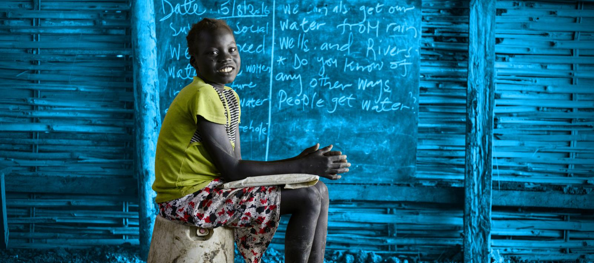

Objetivos
Deseamos alcanzar grandes metas.

Salud
Es nuestra principal prioridad.

Conciencia
Motivando empatía entre los niños.
Deseamos alcanzar grandes metas.
Es nuestra principal prioridad.
Motivando empatía entre los niños.
El mundo ha cambiado, pero las necesidades de los niños no. Descubre cómo el compromiso de UNICEF con la infancia sigue siendo igual de sólido, a pesar de las complejidades de nuestro mundo.
Desde diciembre de 1946, UNICEF defiende los derechos y el bienestar de todos los niños del mundo. Conoce la historia de UNICEF para entender dónde nos encontramos y hacia dónde nos dirigimos, juntos.
Millones de niños en todo el mundo están atrapados en ciclos de pobreza y violencia. Lee nuestro Estado Mundial de la Infancia y conoce las dificultades a las que se enfrentan los niños del mundo en situación de pobreza y aislamiento.
Desde hace 70 años, UNICEF lidera la lucha mundial en favor de los derechos de los niños. Súmate a UNICEF para contribuir directamente a mejorar la vida de los niños de todo el mundo.